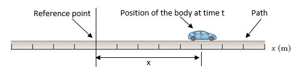
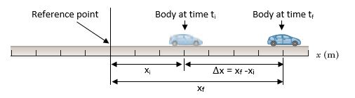
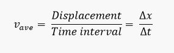
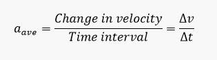

Uniformly Accelerated Rectilinear Motion
-
Motion in One Dimension
- As a first step in studying classical mechanics, we describe the motion of an object while ignoring the interactions with external agents that might be affecting or modifying that motion. This portion of classical mechanics is called kinematics (The word kinematics has the same root as cinema.)
- Motion of an object represents a continuous change in the object’s position.
- Motion Along a Straight Line (Rectilinear Motion)
- We start our study with the simplest type of motion a body can undergo. This is called rectilinear motion or motion along a straight line. For the analysis, we will be considering the line of motion as a coordinate axis, i.e. the x-axis if the line of motion is horizontal or inclined or the y-axis if the line of motion is vertical.
- Basics Concepts:
- 1. Time (t)
- Measured in terms of change
- Motion always takes place over a period of time
- Time Instant is a point in time, i.e. at the time 5 seconds after starting.
- Time Interval (∆t) is a length of time, i.e. during the time t1 = 5secs to t2 = 10 seconds, etc.
- 2. Position (x)
- This is to indicate the location of the body at any time as it moves. It is the distance from a given reference point along the path at any time.
- 
- In cases where the line of motion is the y-axis, position is denoted by (y).
- 3. Displacement (∆x)
- Displacement is defined as the change in position during some time interval.
- 
- Displacement is different from distance traveled in the sense that displacement is a vector quantity directed from the initial to the final position. Distance is the length of a path followed by a particle. However, in one directional rectilinear motion, the magnitude of the displacement is the same as the distance traveled.
- 4. Velocity (∆x)
- The body describes how fast that body is moving including its direction of motion.
- Average velocity (Vave) is the rate of change in the position of the body, that is the displacement of the body per time interval taken between two points along its path.
- 
- Instantaneous velocity (v) is the velocity of a body at a particular time instant or point along its path.
- Speed – distance per unit time.
- 4. Acceleration (∆x)
- The body is the rate of change in the velocity of the body.
- Average acceleration (aave) is the acceleration of the body taken during a time interval or during a certain displacement. It is the rate of change of the velocity
- 
- Instantaneous acceleration (a) is the acceleration at a given time instant or point along its path.
-
Uniformly Accelerated Rectilinear Motion (UARM)
- A very common and simple type of one-dimensional motion is that the acceleration is
constant. In such a case, at any instant within the interval, and the velocity changes
at the same rate throughout the motion.
- Basic equations used for analyzing UARM:
- To simplify the equations, it will be assumed here that at time t = 0, the
position xi = 0
- Thus the time interval Δt will be the same as time instant t (Δt = t) because ti
= 0 and tf = t.
- The displacement Δx will also become same as position x (Δx = x) because xi =
0 and xf = x at time instant t.
- Units of force
- Free Fall – a special case of rectilinear motion with constant acceleration.
- The path is always vertical.
- The acceleration is constant and of known magnitude and direction.
- a = g = -9.8 m/s^2 (in the MKS system)
- = -980 cm/s^2 (in the CGS system)
- The (-) sign indicates that the acceleration is directed downward.
- Equations applied in the analysis:
- Where:
- g = -9.8 m/s^2
- y = vertical displacement of the body and it can be (+) or (-)
- * (+) if measured above the starting point
- * (-) if measured below the starting point
- v = (+) upward motion
- (-) downward motion
-
Sample Problems